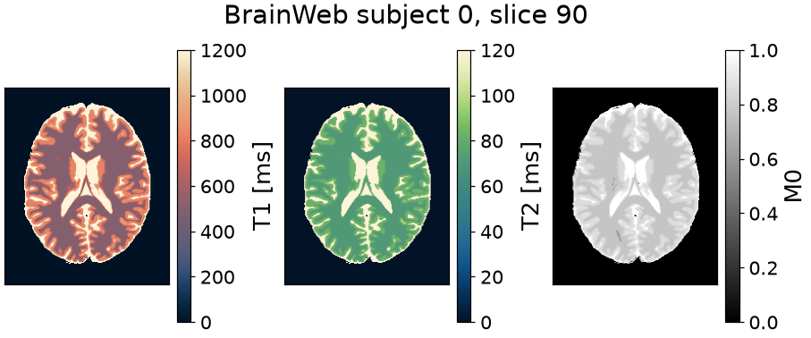
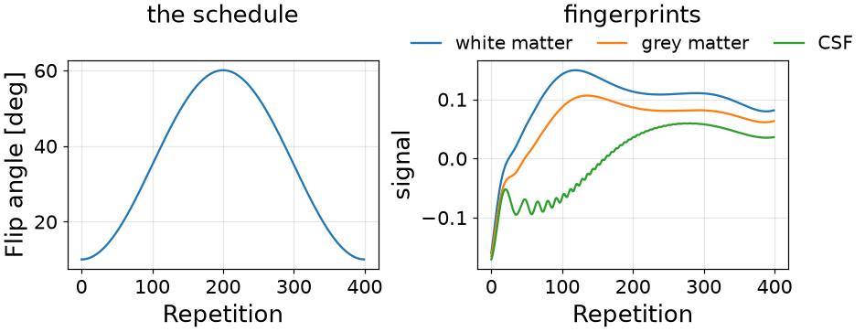
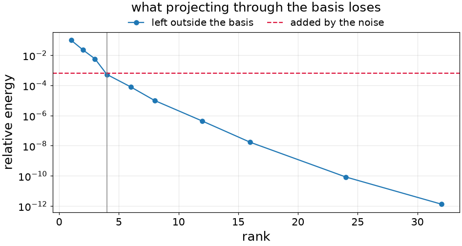
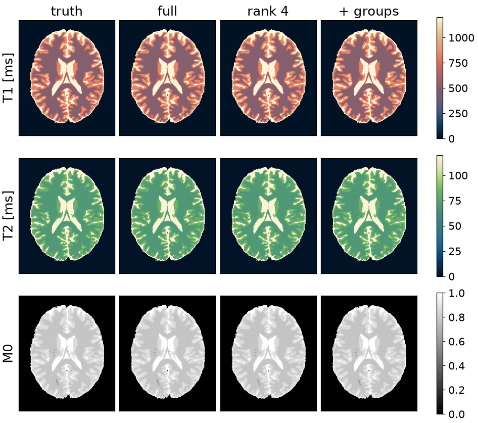
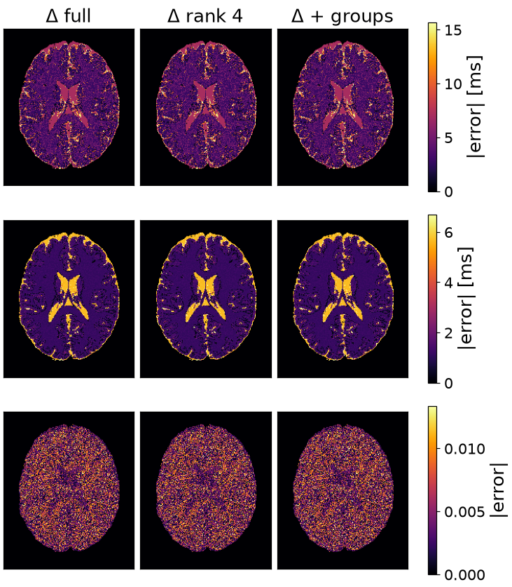

Note
Go to the end to download the full example code or to run this example in your browser via Binder.
Dictionary matching#
The scope of this notebook is to map a brain slice by exhaustive dictionary matching, and to show the two ways of making that affordable: working in the low-rank basis the train spans, and clustering the dictionary so that most atoms are never scored.
A dictionary spans every combination of the parameters, so its size is the product of the grids and each atom is as long as the train. The two savings are independent and multiply; what each costs and what each gets wrong is read off the same slice.
The problem is stated over a simulator carrying the sequence and filled in
by an estimator. execution() decides where that work runs,
and the timings below are taken inside it.
import time
import numpy as np
import torch
import torchsim
from torchsim import (
Subspace,
)
from torchsim.estimators import DictionaryMatcher
from torchsim.simulators import MRFSimulator
Phantom#
BrainWeb subject 0, slice 90: an axial slice at 1 mm through the lateral ventricles. BrainWeb publishes fuzzy memberships rather than labels, so each voxel holds a fraction of each tissue, and the relaxation times are weighted by those fractions. A third of the voxels are mixtures, so the truth is a continuum and not four values.

Downloading tissues: 0%| | 0/10 [00:00<?, ?it/s]
Downloading phantom_1.0mm_normal_bck: 0.00B [00:00, ?B/s]
Downloading phantom_1.0mm_normal_bck: 1.00kB [00:00, 6.03kB/s]
Downloading phantom_1.0mm_normal_bck: 40.1kB [00:00, 160kB/s]
Downloading phantom_1.0mm_normal_bck: 177kB [00:00, 537kB/s]
Downloading phantom_1.0mm_normal_bck: 441kB [00:00, 1.09MB/s]
Downloading phantom_1.0mm_normal_bck: 952kB [00:00, 2.07MB/s]
Downloading phantom_1.0mm_normal_bck: 1.38MB [00:00, 2.77MB/s]
Downloading phantom_1.0mm_normal_bck: 1.66MB [00:00, 2.63MB/s]
Downloading phantom_1.0mm_normal_bck: 1.93MB [00:01, 2.42MB/s]
Downloading phantom_1.0mm_normal_bck: 2.17MB [00:01, 2.37MB/s]
Downloading tissues: 10%|█ | 1/10 [00:02<00:19, 2.15s/it]
Downloading phantom_1.0mm_normal_csf: 0.00B [00:00, ?B/s]
Downloading phantom_1.0mm_normal_csf: 1.00kB [00:00, 9.15kB/s]
Downloading phantom_1.0mm_normal_csf: 40.8kB [00:00, 198kB/s]
Downloading phantom_1.0mm_normal_csf: 183kB [00:00, 630kB/s]
Downloading phantom_1.0mm_normal_csf: 433kB [00:00, 1.16MB/s]
Downloading tissues: 20%|██ | 2/10 [00:03<00:13, 1.63s/it]
Downloading phantom_1.0mm_normal_gry: 0.00B [00:00, ?B/s]
Downloading phantom_1.0mm_normal_gry: 1.00kB [00:00, 9.33kB/s]
Downloading phantom_1.0mm_normal_gry: 40.8kB [00:00, 191kB/s]
Downloading phantom_1.0mm_normal_gry: 177kB [00:00, 636kB/s]
Downloading phantom_1.0mm_normal_gry: 457kB [00:00, 1.14MB/s]
Downloading phantom_1.0mm_normal_gry: 953kB [00:00, 2.20MB/s]
Downloading tissues: 30%|███ | 3/10 [00:04<00:10, 1.49s/it]
Downloading phantom_1.0mm_normal_wht: 0.00B [00:00, ?B/s]
Downloading phantom_1.0mm_normal_wht: 1.00kB [00:00, 7.10kB/s]
Downloading phantom_1.0mm_normal_wht: 40.8kB [00:00, 179kB/s]
Downloading phantom_1.0mm_normal_wht: 167kB [00:00, 543kB/s]
Downloading phantom_1.0mm_normal_wht: 401kB [00:00, 1.05MB/s]
Downloading tissues: 40%|████ | 4/10 [00:05<00:08, 1.35s/it]
Downloading phantom_1.0mm_normal_fat: 0.00B [00:00, ?B/s]
Downloading phantom_1.0mm_normal_fat: 8.81kB [00:00, 66.2kB/s]
Downloading phantom_1.0mm_normal_fat: 88.8kB [00:00, 435kB/s]
Downloading phantom_1.0mm_normal_fat: 257kB [00:00, 946kB/s]
Downloading phantom_1.0mm_normal_fat: 449kB [00:00, 1.20MB/s]
Downloading tissues: 50%|█████ | 5/10 [00:06<00:06, 1.20s/it]
Downloading phantom_1.0mm_normal_m-s: 0.00B [00:00, ?B/s]
Downloading phantom_1.0mm_normal_m-s: 1.00kB [00:00, 6.65kB/s]
Downloading phantom_1.0mm_normal_m-s: 40.8kB [00:00, 167kB/s]
Downloading phantom_1.0mm_normal_m-s: 177kB [00:00, 535kB/s]
Downloading phantom_1.0mm_normal_m-s: 385kB [00:00, 918kB/s]
Downloading phantom_1.0mm_normal_m-s: 785kB [00:00, 1.63MB/s]
Downloading phantom_1.0mm_normal_m-s: 1.49MB [00:00, 2.90MB/s]
Downloading phantom_1.0mm_normal_m-s: 2.34MB [00:00, 4.28MB/s]
Downloading tissues: 60%|██████ | 6/10 [00:08<00:05, 1.37s/it]
Downloading phantom_1.0mm_normal_skn: 0.00B [00:00, ?B/s]
Downloading phantom_1.0mm_normal_skn: 1.00kB [00:00, 5.72kB/s]
Downloading phantom_1.0mm_normal_skn: 40.1kB [00:00, 156kB/s]
Downloading phantom_1.0mm_normal_skn: 183kB [00:00, 548kB/s]
Downloading phantom_1.0mm_normal_skn: 457kB [00:00, 1.12MB/s]
Downloading phantom_1.0mm_normal_skn: 945kB [00:00, 2.02MB/s]
Downloading phantom_1.0mm_normal_skn: 1.78MB [00:00, 3.56MB/s]
Downloading phantom_1.0mm_normal_skn: 2.24MB [00:00, 3.86MB/s]
Downloading phantom_1.0mm_normal_skn: 2.62MB [00:01, 3.71MB/s]
Downloading phantom_1.0mm_normal_skn: 2.98MB [00:01, 3.41MB/s]
Downloading tissues: 70%|███████ | 7/10 [00:10<00:04, 1.54s/it]
Downloading phantom_1.0mm_normal_skl: 0.00B [00:00, ?B/s]
Downloading phantom_1.0mm_normal_skl: 1.00kB [00:00, 8.98kB/s]
Downloading phantom_1.0mm_normal_skl: 40.8kB [00:00, 192kB/s]
Downloading phantom_1.0mm_normal_skl: 177kB [00:00, 588kB/s]
Downloading phantom_1.0mm_normal_skl: 441kB [00:00, 1.15MB/s]
Downloading tissues: 80%|████████ | 8/10 [00:11<00:02, 1.45s/it]
Downloading phantom_1.0mm_normal_gli: 0.00B [00:00, ?B/s]
Downloading phantom_1.0mm_normal_gli: 1.00kB [00:00, 7.04kB/s]
Downloading tissues: 90%|█████████ | 9/10 [00:12<00:01, 1.26s/it]
Downloading phantom_1.0mm_normal_mit: 0.00B [00:00, ?B/s]
Downloading phantom_1.0mm_normal_mit: 1.00kB [00:00, 7.81kB/s]
Downloading phantom_1.0mm_normal_mit: 40.1kB [00:00, 176kB/s]
Downloading phantom_1.0mm_normal_mit: 177kB [00:00, 558kB/s]
Downloading phantom_1.0mm_normal_mit: 433kB [00:00, 1.08MB/s]
Downloading phantom_1.0mm_normal_mit: 913kB [00:00, 1.96MB/s]
Downloading phantom_1.0mm_normal_mit: 1.53MB [00:00, 3.20MB/s]
Downloading phantom_1.0mm_normal_mit: 1.86MB [00:00, 3.23MB/s]
Downloading phantom_1.0mm_normal_mit: 2.19MB [00:01, 3.17MB/s]
Downloading tissues: 100%|██████████| 10/10 [00:14<00:00, 1.34s/it]
Text(0.5, 0.9878790357573323, 'BrainWeb subject 0, slice 90')
Sequence#
Four hundred repetitions after an inversion, at a fixed repetition time and a flip angle that varies smoothly along the train. A schedule that jumped about would give trajectories differing by noise rather than by physics.
The readouts wind the states on rather than rewinding them, so the trajectory comes back real to within 3e-8. That halves both the dictionary and the arithmetic that searches it.
fingerprints = simulator.simulate(
T1=torch.tensor([500.0, 833.0, 2569.0]), T2=torch.tensor([70.0, 83.0, 329.0])
).real

[<matplotlib.legend.Legend object at 0x7f831426fd70>]
The measurement, with noise at 2% of the peak fingerprint. The estimators are told the same number: one trained for more noise than the scan has learns to distrust the data and answers with the prior.
NOISE_STD = float(0.02 * fingerprints.max())
truth = {
"T1": torch.as_tensor(T1_true[mask].copy()),
"T2": torch.as_tensor(T2_true[mask].copy()),
}
density = torch.as_tensor(M0_true[mask].copy())
clean = simulator.simulate(**truth).real * density[:, None]
generator = torch.Generator().manual_seed(42)
measured = clean + NOISE_STD * torch.randn(clean.shape, generator=generator)
Problem statement#
What is unknown, over what range, and at what noise level. Both relaxation times span more than a decade, so the grid is logarithmic: uniform spacing would spend most of it on long T1, where the trajectories are nearly parallel.
Subspace rank#
A basis fitted to simulated trajectories says how much of their energy each rank keeps. One minus that fraction is the relative squared error of projecting through the basis and back.

[<matplotlib.legend.Legend object at 0x7f830c987a70>]
Four directions out of four hundred leave less outside the basis than the noise puts in, and every contrast dropped is arithmetic the match avoids.
Dictionary#
The dictionary spans the parameters jointly, so its size is the product of the grids: twenty thousand atoms for two parameters, on a grid fine enough that the spacing is not what limits the answer. A third parameter multiplies it again.
T1_GRID = torch.logspace(np.log10(T1_RANGE[0]), np.log10(T1_RANGE[1]), 200)
T2_GRID = torch.logspace(np.log10(T2_RANGE[0]), np.log10(T2_RANGE[1]), 100)
grid_t1, grid_t2 = torch.meshgrid(T1_GRID, T2_GRID, indexing="ij")
full = DictionaryMatcher(simulator).fit(
T1=grid_t1.reshape(-1), T2=grid_t2.reshape(-1), seed=0
)
maps = full.map(measured) # {"T1": ..., "T2": ...}, one value per voxel
Matching in the subspace#
rank is the whole change. The dictionary is fitted, projected and stored
in four directions instead of four hundred, and the measurement is projected
the same way before scoring.
low = DictionaryMatcher(simulator).fit(
T1=grid_t1.reshape(-1), T2=grid_t2.reshape(-1), seed=0, rank=RANK
)
Clustered dictionary#
Compressing shortened every inner product; grouping cuts how many are taken. Neighbouring tissues give nearly parallel signals, so the atoms cluster, and a voxel scored against one representative per group rules out most groups before any atom inside them is touched.
The clustering is done in the compressed basis, so a group is entered without leaving the space the measurement is already in.
32 groups of 625 atoms; 1.4 still open per voxel
Cost and accuracy#
Best of three passes each, after a warm-up. model is what the fitted estimator carries between volumes; peak is the high-water mark on the card, which decides whether a volume fits or has to be streamed, and a dash on a machine with no card.
method train map model peak T1 T2 M0
----------------------------------------------------------------------------------------
match, 400 contrasts 9.0s 8.42s 122.3 MiB -- 0.6% 1.6% 0.4%
match, rank 4 1.1s 1.78s 1.4 MiB -- 0.6% 1.6% 0.4%
match, rank 4 + groups 1.1s 0.10s 1.4 MiB -- 0.6% 1.6% 0.4%
Maps#


Total running time of the script: (1 minutes 4.058 seconds)